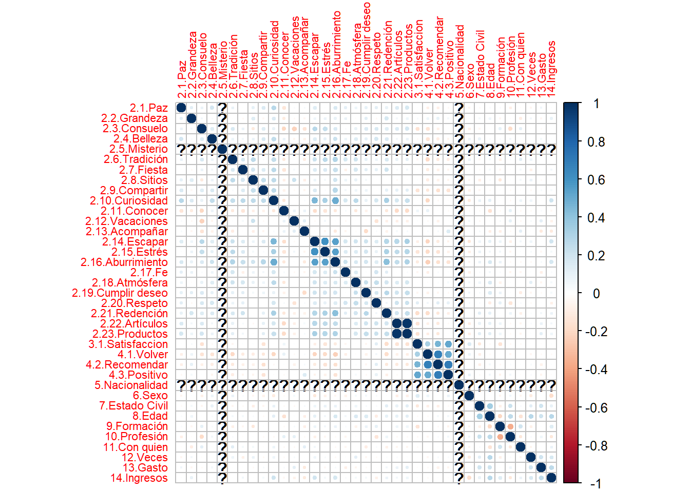
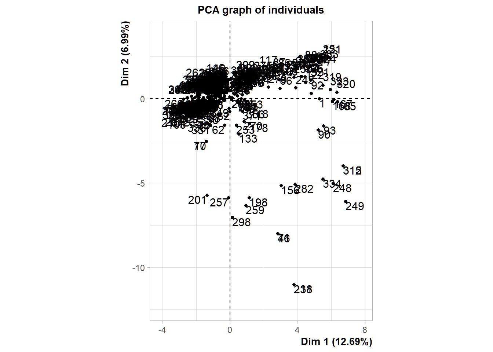
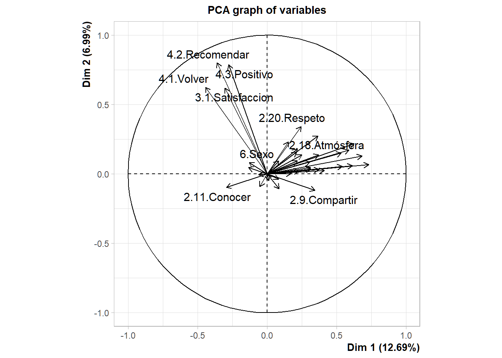
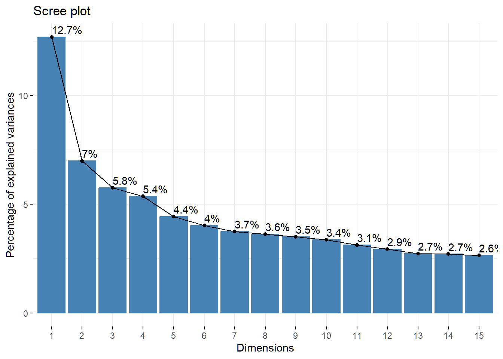
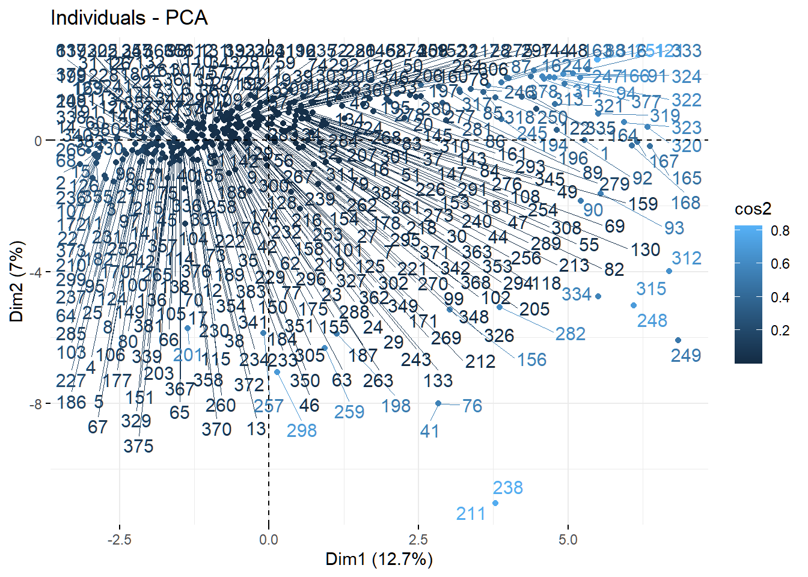
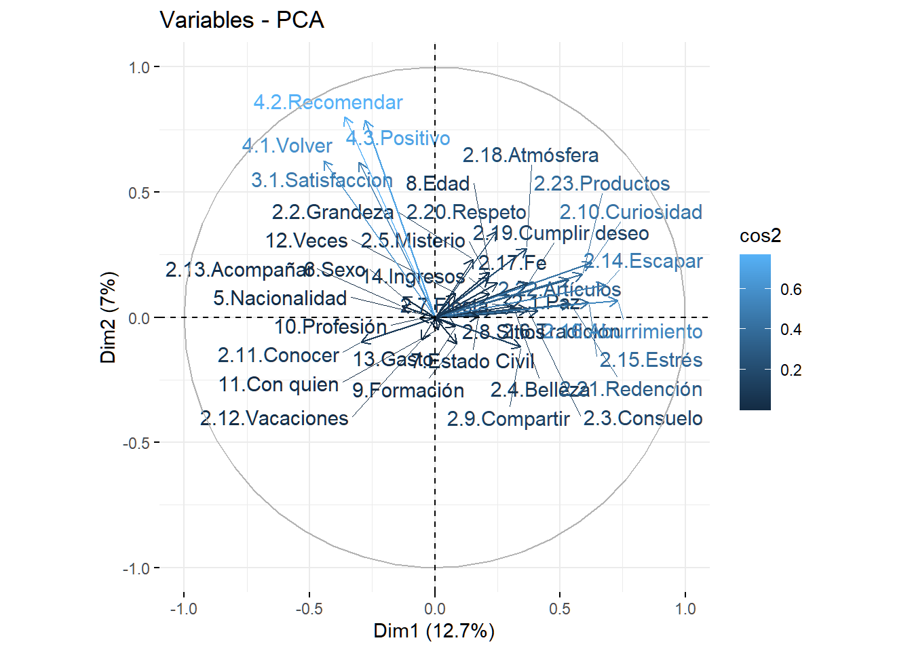

library(tidyverse)
library(readxl)
library(FactoMineR)
library(factoextra)
library(corrplot)
library(Factoshiny)Motivations Virgen de la Puerta
Principal Components Analysis - PCA
#Load the data
otuzco <- read_csv2("data/Motivaciones_Virgen_de_Otuzco_short_UTF8.csv")#Check the structure
#str(otuzco)#Create the data matrix
df_otuzco <- otuzco[, 2:38]Redundancy
corrplot(cor(df_otuzco), tl.cex = .7)
#Run the PCA
pca_result <- PCA(df_otuzco, ncp= 15, graph = TRUE)

Explore the results
1.Top 20 Eigenvalues
pca_result$eig[1:15,] eigenvalue percentage of variance cumulative percentage of variance
comp 1 4.695643 12.690928 12.69093
comp 2 2.587161 6.992326 19.68325
comp 3 2.128211 5.751921 25.43517
comp 4 1.984477 5.363451 30.79863
comp 5 1.636995 4.424310 35.22294
comp 6 1.487067 4.019101 39.24204
comp 7 1.383767 3.739911 42.98195
comp 8 1.340755 3.623662 46.60561
comp 9 1.295759 3.502053 50.10766
comp 10 1.244192 3.362681 53.47034
comp 11 1.157620 3.128703 56.59905
comp 12 1.085354 2.933390 59.53244
comp 13 1.009169 2.727482 62.25992
comp 14 1.000000 2.702703 64.96262
comp 15 0.976430 2.639000 67.601622. Top 20 Variables
pca_result$var$coord[1:15, ] Dim.1 Dim.2 Dim.3 Dim.4 Dim.5
2.1.Paz 0.3073316 0.08684902 -0.086230355 0.108974198 -0.001972828
2.2.Grandeza 0.1526617 0.23203485 0.105922852 0.034327919 0.073596025
2.3.Consuelo 0.3720651 0.03174897 -0.361019913 -0.119300635 0.073205626
2.4.Belleza 0.3162145 0.03540373 0.009324212 0.166920971 -0.105988817
2.5.Misterio 0.2142847 0.15834978 0.090345627 0.326969722 0.115923765
2.6.Tradición 0.4115038 0.02491890 0.023758191 0.328476561 -0.097076850
2.7.Fiesta 0.3115979 0.04542613 0.005945912 0.274966743 -0.098925938
2.8.Sitios 0.2287796 0.02244506 0.186238191 0.577302821 0.068343644
2.9.Compartir 0.3437065 -0.11834574 -0.041918076 0.252003514 0.059118651
2.10.Curiosidad 0.6269808 0.21716952 0.048069839 0.293623504 0.136504789
2.11.Conocer -0.2930102 -0.09735773 0.038486108 0.108446529 -0.044802915
2.12.Vacaciones -0.0518763 -0.09018056 0.248241155 0.266198902 -0.014224649
2.13.Acompañar -0.1327042 0.04469229 -0.060673229 -0.021008037 -0.153123026
2.14.Escapar 0.6821832 0.12959749 -0.091277050 0.003417718 0.120549970
2.15.Estrés 0.6140755 0.05884641 -0.080538247 -0.011991199 -0.032179726
Dim.6 Dim.7 Dim.8 Dim.9 Dim.10
2.1.Paz 0.335004665 -0.32206436 0.03862920 -0.07766536 0.10197850
2.2.Grandeza -0.053873746 -0.21848120 -0.30786102 -0.40300307 0.14682316
2.3.Consuelo -0.231587830 -0.17852752 -0.08930643 0.08156235 -0.37515243
2.4.Belleza 0.006266856 -0.35369742 0.46905639 0.08952959 0.09738293
2.5.Misterio 0.359976553 -0.20155015 -0.03977877 -0.09049250 -0.26029476
2.6.Tradición -0.114305724 0.15097763 -0.06184847 0.14510867 -0.30370911
2.7.Fiesta -0.104147047 0.16881957 -0.13864715 0.48683398 0.08944847
2.8.Sitios 0.295125890 -0.04250717 -0.26300557 0.08938750 0.02223267
2.9.Compartir 0.284246888 -0.29328671 -0.08910905 0.09547825 0.07177706
2.10.Curiosidad 0.084132514 0.09867716 0.12678517 -0.02838231 0.08406922
2.11.Conocer 0.068307795 -0.01136298 0.53430303 -0.18279562 0.26284184
2.12.Vacaciones 0.322403091 0.31725934 -0.05077207 0.06794453 0.37997661
2.13.Acompañar 0.412933228 0.48950667 0.22999305 -0.09390090 -0.08191331
2.14.Escapar -0.138289186 0.30417073 0.03974764 -0.14264660 0.06855613
2.15.Estrés -0.258956912 0.42387928 -0.02059971 -0.19294420 0.11496911
Dim.11 Dim.12 Dim.13 Dim.14 Dim.15
2.1.Paz -0.12698289 0.40975861 -0.028879103 1.424854e-13 -0.299437117
2.2.Grandeza -0.07111680 0.44178032 -0.029998903 -9.437810e-14 0.237831569
2.3.Consuelo -0.11916781 -0.02425307 0.279780900 -2.210402e-14 0.179950564
2.4.Belleza -0.18053940 0.05266702 0.197430212 1.157786e-14 0.076255371
2.5.Misterio 0.08474185 -0.07628150 0.181511712 -1.453278e-13 0.410544546
2.6.Tradición 0.30262429 0.10072274 0.265742697 5.059403e-14 -0.162703635
2.7.Fiesta -0.20065768 -0.13718691 -0.293840356 -4.991820e-14 0.024119100
2.8.Sitios 0.12715372 -0.02371202 -0.005282747 -2.465783e-14 0.009037758
2.9.Compartir -0.33046402 -0.31875867 0.048434285 2.510712e-14 0.053226049
2.10.Curiosidad -0.25603758 0.05335127 -0.131188023 2.324717e-14 -0.091264106
2.11.Conocer 0.11869620 -0.34331572 0.034747241 -9.146210e-14 0.142697828
2.12.Vacaciones 0.39484197 0.11745000 0.070044828 -4.525338e-14 0.221364337
2.13.Acompañar -0.25652575 0.25641949 -0.265104859 -2.942264e-14 0.088707689
2.14.Escapar -0.04665622 -0.08497864 0.100984209 3.564561e-14 -0.071595539
2.15.Estrés 0.09581573 -0.06582153 0.207103868 3.000401e-15 0.0170966913. Top 20 individuals
Coordinates of individuals on the principal components
pca_result$ind$coord[1:15,] Dim.1 Dim.2 Dim.3 Dim.4 Dim.5 Dim.6
1 5.2752988 -0.005170226 1.1055709 1.67837740 -1.88928653 -0.3567579
2 -3.1559535 -0.726116212 0.6213008 1.92811940 -0.30478520 0.9922049
3 -2.4430799 -0.595159261 -0.3396692 0.96644961 0.43676054 0.7465389
4 -2.2358239 -0.105386732 3.1443866 -0.00682115 -1.08113195 0.1800799
5 -2.0882704 -0.207042076 -0.2684468 1.29122536 -1.23832004 0.4184632
6 -1.2085283 0.509479432 1.4037895 0.59087353 -0.97638285 -1.1695244
7 -0.3322099 0.164233517 0.5558399 -0.20163575 -0.90353348 1.2148549
8 -2.1522473 -0.682508448 -0.4431443 -0.01798381 -1.43131540 -0.4460216
9 -0.6490877 -0.061279903 0.4486530 -0.57235556 -0.51092710 -0.3346625
10 -0.5256360 0.699911174 1.7679756 0.36616456 -2.07987322 0.3720956
11 -2.7258869 -1.164607268 2.2975960 0.67833386 0.01512438 -1.8355122
12 -1.2656668 -0.592734140 0.2488193 2.02743258 -0.89455353 -2.8023215
13 -1.2731704 -0.329859162 -0.5148705 1.64598490 -1.44168955 0.9064296
14 -1.9521220 -0.135428079 1.3824842 2.33525108 -2.05616134 1.6262112
15 -2.8152966 -0.247305154 2.4960129 0.89014456 -0.10079305 1.2575930
Dim.7 Dim.8 Dim.9 Dim.10 Dim.11 Dim.12
1 1.36605694 -0.6787652 -0.3458622 -1.28523266 -0.2952499 0.95798943
2 0.14850313 2.0010164 0.9666781 -1.51802558 -2.0771173 -1.04977154
3 -0.89079216 2.5169432 -0.3452659 -1.62453392 -1.3727605 -2.09973931
4 0.85498735 1.9837734 -0.7313674 0.09964496 -1.0744428 0.05714703
5 -0.63028512 0.7474314 -1.3763972 1.26165867 -0.4975352 1.35378197
6 -0.63751190 1.7694827 -1.4647724 -1.69734835 -1.6361155 0.52612002
7 0.31789535 0.4800817 -2.5807901 -0.71484421 -0.6220262 -0.67549157
8 2.07058337 -0.9736781 -0.5612377 0.78534816 -1.3751654 -1.08257854
9 2.45716676 -2.2654887 2.4333712 -1.68515832 -0.6186087 -0.16839520
10 0.97887678 -0.9766126 2.1221209 -0.39880711 -0.1077710 -1.62471828
11 1.85359410 0.2943436 1.8436773 -0.32908997 0.7320020 -2.03333130
12 0.51994885 -0.4868160 0.4013822 -0.02625981 0.6362123 -1.65520112
13 -1.48541409 -0.9311949 1.5201412 3.04602444 -0.9870421 0.18347768
14 0.09843708 -1.3708681 1.6472065 0.26829692 -2.8991387 -0.41593501
15 -0.36198149 -0.7106350 -0.6008983 0.70975849 0.6123877 1.18632134
Dim.13 Dim.14 Dim.15
1 0.11669352 1 -0.30341208
2 -0.89428613 1 1.35207161
3 0.56577066 1 -1.29438667
4 0.72055029 1 -1.18427195
5 0.29899205 1 0.16372532
6 1.56394145 1 0.05768294
7 1.78469346 1 -0.81189109
8 0.08536930 1 0.62794605
9 0.77046937 1 -0.21453954
10 -1.83850937 1 -1.37573689
11 1.86964432 1 -0.88835939
12 1.60560376 1 1.21646114
13 0.58979662 1 0.94389398
14 -0.33881496 1 0.28396459
15 -0.05926833 1 -1.23956929Cos2 : quality of representation of individuals on the principal components
pca_result$ind$cos2[1:15,] Dim.1 Dim.2 Dim.3 Dim.4 Dim.5 Dim.6
1 0.431136327 4.141327e-07 0.018936237 4.364151e-02 5.529886e-02 0.0019718220
2 0.218485404 1.156574e-02 0.008467693 8.155096e-02 2.037741e-03 0.0215955334
3 0.171477634 1.017650e-02 0.003314702 2.683432e-02 5.480484e-03 0.0160116838
4 0.146363956 3.251853e-04 0.289488179 1.362304e-06 3.422287e-02 0.0009494881
5 0.143481449 1.410391e-03 0.002371039 5.485628e-02 5.045313e-02 0.0057615162
6 0.046979347 8.349234e-03 0.063386579 1.123007e-02 3.066434e-02 0.0439958702
7 0.003945483 9.642701e-04 0.011045225 1.453484e-03 2.918526e-02 0.0527623227
8 0.168103258 1.690472e-02 0.007126596 1.173695e-05 7.434683e-02 0.0072194409
9 0.013303858 1.185788e-04 0.006356119 1.034434e-02 8.243065e-03 0.0035365919
10 0.008034277 1.424500e-02 0.090892731 3.898784e-03 1.257912e-01 0.0040261098
11 0.193374601 3.529740e-02 0.137382407 1.197487e-02 5.953045e-06 0.0876795546
12 0.053152142 1.165741e-02 0.002054236 1.363876e-01 2.655184e-02 0.2605661080
13 0.052737777 3.540021e-03 0.008624715 8.814556e-02 6.762266e-02 0.0267311077
14 0.091162698 4.387536e-04 0.045721831 1.304579e-01 1.011388e-01 0.0632640730
15 0.280231006 2.162391e-03 0.220273137 2.801489e-02 3.591940e-04 0.0559175497
Dim.7 Dim.8 Dim.9 Dim.10 Dim.11 Dim.12
1 0.0289106659 0.007137721 0.001853219 2.559081e-02 0.0013505171 1.421811e-02
2 0.0004837628 0.087833971 0.020498636 5.054980e-02 0.0946418633 2.417413e-02
3 0.0227973783 0.182003171 0.003424835 7.582103e-02 0.0541404290 1.266668e-01
4 0.0214031822 0.115224041 0.015661386 2.907165e-04 0.0338006900 9.561947e-05
5 0.0130706259 0.018380824 0.062331826 5.237283e-02 0.0081446013 6.030034e-02
6 0.0130728392 0.100713106 0.069013434 9.266917e-02 0.0861035850 8.903545e-03
7 0.0036127960 0.008239587 0.238111554 1.826829e-02 0.0138322380 1.631229e-02
8 0.1555884065 0.034405084 0.011431033 2.238289e-02 0.0686280481 4.253149e-02
9 0.1906514489 0.162067026 0.186976741 8.967105e-02 0.0120837814 8.954272e-04
10 0.0278633064 0.027734556 0.130953422 4.624900e-03 0.0003377386 7.675961e-02
11 0.0894155496 0.002254721 0.088461352 2.818468e-03 0.0139446721 1.075970e-01
12 0.0089702231 0.007863425 0.005345622 2.288048e-05 0.0134303140 9.090412e-02
13 0.0717866764 0.028211747 0.075182475 3.018669e-01 0.0316971416 1.095255e-03
14 0.0002318039 0.044956719 0.064908167 1.722006e-03 0.2010672120 4.138607e-03
15 0.0046327685 0.017855049 0.012766439 1.781103e-02 0.0132593048 4.975911e-02
Dim.13 Dim.14 Dim.15
1 0.0002109667 0.01549246 0.0014262190
2 0.0175434183 0.02193619 0.0401014995
3 0.0091962969 0.02872977 0.0481349142
4 0.0152015393 0.02927918 0.0410640570
5 0.0029413153 0.03290200 0.0008819703
6 0.0786745561 0.03216572 0.0001070257
7 0.1138681761 0.03574992 0.0235651738
8 0.0002644814 0.03629040 0.0143098955
9 0.0187448341 0.03157700 0.0014534013
10 0.0982897640 0.02907881 0.0550360638
11 0.0909707478 0.02602458 0.0205381426
12 0.0855379338 0.03318043 0.0490996598
13 0.0113175734 0.03253485 0.0289864613
14 0.0027461763 0.02392232 0.0019289974
15 0.0001241976 0.03535639 0.0543262211Contribution of individuals to the princial components
pca_result$ind$contrib[1:15,] Dim.1 Dim.2 Dim.3 Dim.4 Dim.5 Dim.6
1 1.543361997 2.690695e-06 0.149564095 3.696596e-01 5.678285e-01 0.022288731
2 0.552376099 5.307104e-02 0.047234361 4.878548e-01 1.477778e-02 0.172401417
3 0.331016026 3.565429e-02 0.014117784 1.225691e-01 3.034648e-02 0.097598466
4 0.277235504 1.117937e-03 1.209834686 6.105734e-06 1.859426e-01 0.005678958
5 0.241850589 4.314819e-03 0.008818012 2.187897e-01 2.439424e-01 0.030665682
6 0.081000432 2.612755e-02 0.241133838 4.581543e-02 1.516568e-01 0.239528233
7 0.006120668 2.714994e-03 0.037805383 5.335287e-03 1.298704e-01 0.258456183
8 0.256896398 4.688797e-02 0.024029487 4.244107e-05 3.259059e-01 0.034837734
9 0.023365788 3.779910e-04 0.024630621 4.298872e-02 4.152785e-02 0.019613370
10 0.015323003 4.930957e-02 0.382478230 1.759443e-02 6.881692e-01 0.024246393
11 0.412087397 1.365225e-01 0.645953885 6.038231e-02 3.638957e-05 0.590000913
12 0.088840796 3.536431e-02 0.007575694 5.394057e-01 1.273017e-01 1.375225907
13 0.089897317 1.095223e-02 0.032437709 3.555285e-01 3.306473e-01 0.143881949
14 0.211342857 1.846132e-03 0.233869995 7.156322e-01 6.725676e-01 0.463118363
15 0.439563860 6.156185e-03 0.762338441 1.039786e-01 1.616154e-03 0.276960842
Dim.7 Dim.8 Dim.9 Dim.10 Dim.11 Dim.12
1 0.351191036 0.08948669 0.02404089 0.3457362318 0.019610211 0.2202006691
2 0.004150276 0.77771530 0.18780542 0.4823247729 0.970565266 0.2644154234
3 0.149333962 1.23045623 0.02395807 0.5523812849 0.423928140 1.0578594116
4 0.137570463 0.76436974 0.10750177 0.0020782224 0.259698409 0.0007835822
5 0.074761830 0.10850807 0.38074302 0.3331694252 0.055686540 0.4397386596
6 0.076486082 0.60815183 0.43120591 0.6030083866 0.602185927 0.0664151023
7 0.019018408 0.04476614 1.33859672 0.1069557657 0.087040232 0.1094805738
8 0.806847131 0.18414087 0.06330501 0.1290939387 0.425414751 0.2812004590
9 1.136253100 0.99688065 1.19003881 0.5943781089 0.086086431 0.0068038798
10 0.180327462 0.18525245 0.90507515 0.0332894920 0.002612804 0.6333639370
11 0.646599098 0.01682784 0.68314703 0.0226678685 0.120538900 0.9920041486
12 0.050877652 0.04603086 0.03237879 0.0001443326 0.091055640 0.6573531337
13 0.415241641 0.16842268 0.46442142 1.9419952171 0.219166425 0.0080772525
14 0.001823573 0.36501498 0.54530623 0.0150665135 1.890778594 0.0415095619
15 0.024659175 0.09808724 0.07256819 0.1054393170 0.084363689 0.3376773129
Dim.13 Dim.14 Dim.15
1 0.0035139744 0.2604167 0.0245523682
2 0.2063754675 0.2604167 0.4875588455
3 0.0826011179 0.2604167 0.4468437837
4 0.1339780584 0.2604167 0.3740507601
5 0.0230687666 0.2604167 0.0071492311
6 0.6311695783 0.2604167 0.0008874063
7 0.8219252867 0.2604167 0.1758017527
8 0.0018806523 0.2604167 0.1051652664
9 0.1531848562 0.2604167 0.0122755897
10 0.8722415544 0.2604167 0.5047756798
11 0.9020343381 0.2604167 0.2104771948
12 0.6652453260 0.2604167 0.3946609303
13 0.0897655370 0.2604167 0.2376151289
14 0.0296230809 0.2604167 0.0215058216
15 0.0009064637 0.2604167 0.4097974665Scree plot (Contributions graph)
fviz_eig(pca_result, ncp = 15, addlabels = TRUE)
Visualize individuals and variables on the first two principal components
fviz_pca_ind(pca_result, col.ind = "cos2", col.var = "contrib", repel = TRUE)
Correlation circle
fviz_pca_var(pca_result, col.var = "cos2", repel = TRUE)
data_coef = cor()
library(psych)
kmo_result <- KMO(data_coef)
kmo_value <- kmo_result$KMO
print(kmo_value)# Assuming 'df_otuzco' is your correlation matrix
bartlett_result <- cortest.bartlett(data_coef, n = nrow(data_coef))
bartlett_p_value <- bartlett_result$p.value
print(bartlett_p_value)